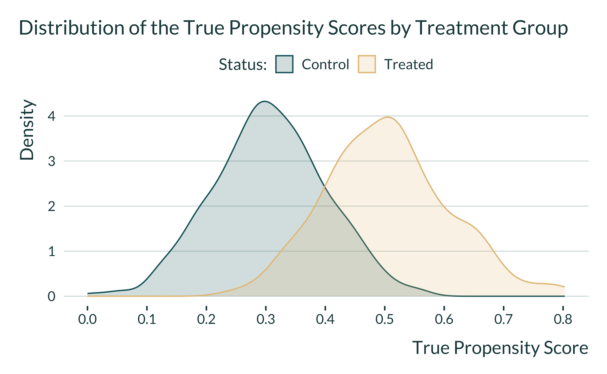
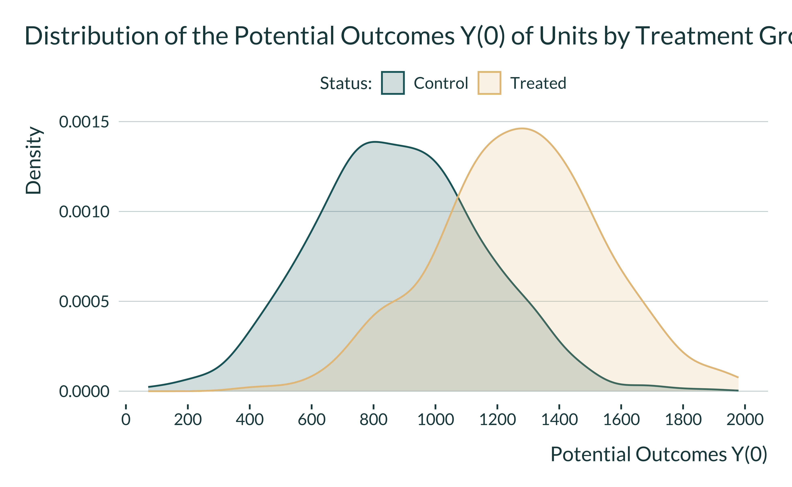
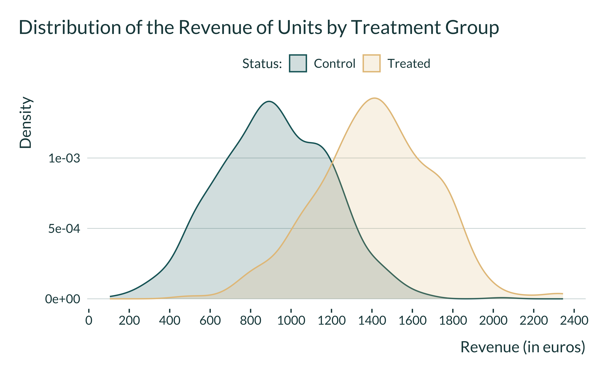
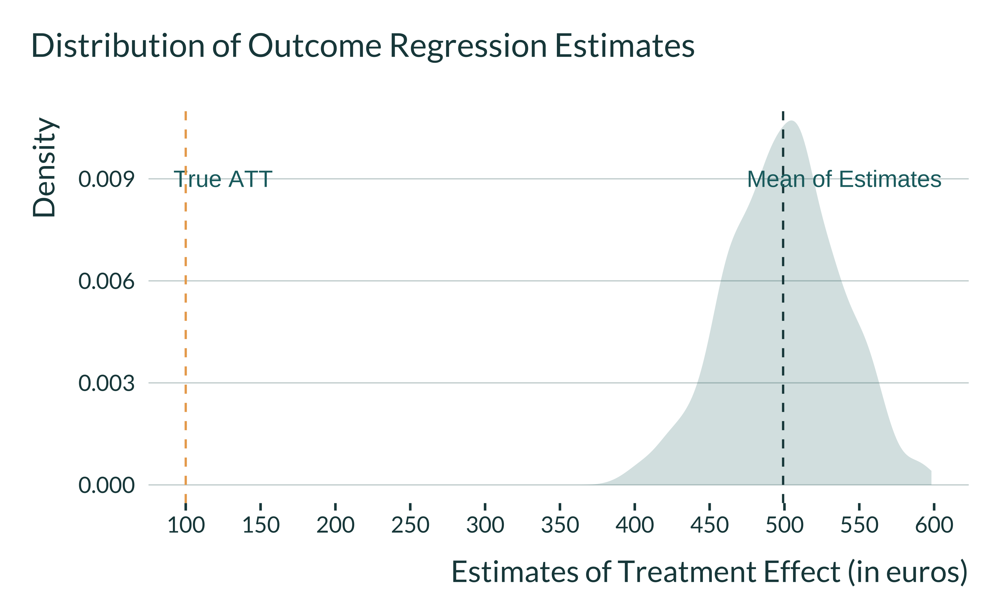
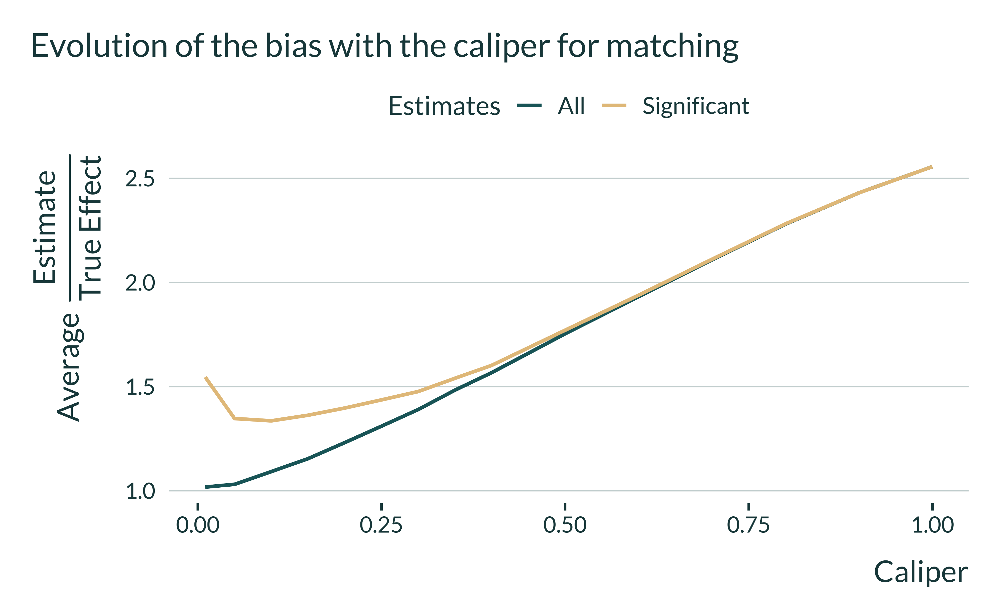
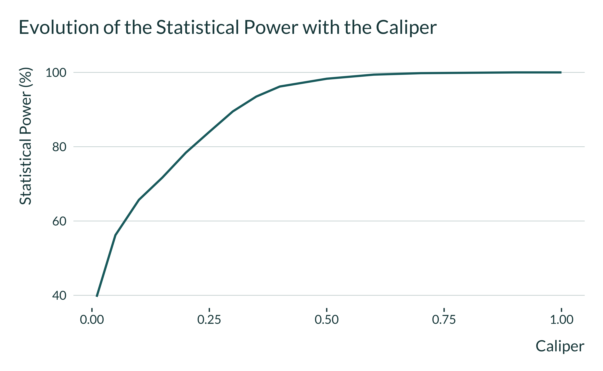

In this document, I run a simulation exercise to illustrate how using a matching procedure to avoid confounding may lead to a loss in power and inflated effect sizes.”
# load required packages
library(knitr) # for creating the R Markdown document
library(tidyverse) # for data manipulation and visualization
library(MatchIt) # for matching analysis
library(lmtest) # for modifying regression standard errors
library(sandwich) # for robust and cluster robust standard errors
library(DT) # for displaying the data as tables
library(mediocrethemes) # vincent's custom ggplot2 theme
library(tictoc) # for measuring running time
library(beepr) # for making a sound when the code is done
library(here) # for paths management
# set ggplot theme
set_mediocre_all(pal = "coty")In the case of matching, the unconfoundedness / exaggeration trade-off is mediated by the
‘strength’ of the instrument considered. When the instrument only explains a limited portion of the variation in the explanatory variable, the IV can still be successful in avoiding confounders but power can low, potentially leading to exaggeration issues to arise.
In this document, I show through simulations how matching procedures targeting the common support of the data could be under-powered and lead to inflated statistically significant estimates. We illustrate this issue with fake-data similar to those from non-randomized labor training programs. In this case, treated individuals self-select themselves to get the treatment and may therefore have different characteristics from individuals who do not enroll in the program. To estimate the causal effect of the treatment on treated, researchers can rely on matching, which is a pre-processing technique to approximate an hypothetical randomized experiment. The method has three main advantages:
The method however relies on the strong assumption that no unmeasured confounders exist and, depending on its stringency, may discard many units from the analysis. This second limit could result in a lack of statistical power to estimate the average treatment on the treated. If journal editors and researchers favor studies based on the their statistical significance, under-powered studies based on matching procedures could lead to estimates that are too large.
To illustrate how matching procedures could be particularly sensitive to statistically significant estimates that inflated, we simulate fake-data from a non-randomized labor training program targeting young individuals. Below are the main steps of the simulation:
id). Each unit is an individual.p_treat) to the treatment and then simulate the true propensity score variable true_ps for treated and control units. For treated units, we draw the propensity scores from a normal distribution \(N(\mu_{T}, \sigma_{T})\) and for control units, from a normal distribution \(N(\mu_{C}, \sigma_{C})\).We display below the code for the function generate_data_matching() which creates the required dataset. Its arguments are the desired sample size (sample_size), the proportion of treated units (p_treat), the mean and standard deviation of the propensity score distributions of treated and control units (mu_t, sigma_t, mu_c, sigma_c), the baseline wage wage, the noise of the equation for simulating the Y(0) (mu_noise, sigma_noise), the ATC and ATT (atc, att).
generate_data_matching <- function(sample_size,
p_treat,
mu_t,
sigma_t,
mu_c,
sigma_c,
wage,
mu_noise,
sigma_noise,
atc,
att) {
data <- tibble(id = 1:sample_size) %>%
mutate(
treatment = rbinom(n = sample_size, size = 1, prob = p_treat),
true_ps = ifelse(
treatment == 0,
rnorm(n(), mean = mu_c, sd = sigma_c),
rnorm(n(), mean = mu_t, sd = sigma_t)
),
true_ps = case_when(true_ps > 1 ~ 1,
true_ps < 0 ~ 0,
true_ps >= 0 & true_ps <= 1 ~ true_ps),
y_0 = wage * true_ps + rnorm(n(), mean = 300, sd = 200),
y_0 = y_0 %>% round(., 0),
y_1 = ifelse(treatment == 1,
y_0 + att,
y_0 + atc),
y_obs = ifelse(treatment == 1, y_1, y_0) %>% round(., 0)
)
return(data)
}In our simulations, we use the following parameters to create a data of 300 units, with about 25% being treated, and with a lack of common overlap in the propensity scores for treated and control units:
| sample_size | p_treat | mu_t | sigma_t | mu_c | sigma_c | wage | mu_noise | sigma_noise | atc | att |
|---|---|---|---|---|---|---|---|---|---|---|
| 300 | 0.25 | 0.5 | 0.1 | 0.3 | 0.1 | 2000 | 300 | 200 | 50 | 100 |
We run one iteration of the function generate_data_matching() to explore the resulting data with 500 units:
About 24.2% of units are treated. We display below the true propensity score distributions by treatment status:

The distribution of potential outcomes Y(0) should be different across the two groups:

We can also see how the observed revenue is distributed across the two groups:

We can check whether the ATT and ATC were correctly simulated. The ATT is computed such as:
and the ATC:
The data have been correctly simulated.
Before moving to the matching procedure, readers might be interested to see what would happen if we analyze our simulated datasets with a simple outcome regression model? Would we recover the true answer?
We first create a regression function to run a simple regression model where we simply regress the observed income on the treatment indicator:
We then simulate 1000 datasets of 300 units and run the regression model:
data_sim_ex <- tibble(sim_id = 1:1000) %>%
mutate(data = map(
sim_id,
~ pmap_dfr(baseline_param_match, generate_data_matching)
)
) %>%
mutate(results = map(data, ~ outcome_regression(.)))
data_sim_ex <- data_sim_ex %>%
select(-data) %>%
unnest(results)
# saveRDS(data_sim_ex, here("Outputs/data_sim_ex.RDS"))We plot the distribution of estimates:
data_sim_ex <- readRDS(here("Outputs/data_sim_ex.RDS"))
data_sim_ex %>%
ggplot(., aes(x = estimate)) +
geom_density() +
geom_vline(xintercept = mean(data_sim_ex$estimate)) +
annotate("text", x = 540, y = 0.009, label = "Mean of Estimates") +
annotate("text", x = 125, y = 0.009, label = "True ATT") +
geom_vline(xintercept = 100, color = colors_mediocre[["complementary"]]) +
scale_x_continuous(breaks = scales::pretty_breaks(n = 10)) +
labs(
title = "Distribution of Outcome Regression Estimates",
x = "Estimates of Treatment Effect (in euros)",
y = "Density",
fill = NULL,
color = NULL
)
With an outcome regression analysis, the average of estimates is equal to 499! The outcome regression analysis suffers from extrapolation bias.
We now implement a simple matching where:
We implement below a propensity score matching procedure where:
We display below the code for the function ps_function() which runs the matching procedure. It takes two inputs: (i) a dataset and (ii) the value of the caliper.
ps_function <- function(data, caliper_value) {
# implements the propensisty score matching
matching_results <- matchit(
treatment ~ id,
distance = data$true_ps,
caliper = caliper_value,
data = data
)
# retrieves the matched dataset
data_matched <- match.data(matching_results)
# computes the proportion of matched treated units
proportion_matched <-
sum(data_matched$treatment) / sum(data$treatment) * 100
# compute the true causal effect for matched units
true_effect <-
mean(data_matched$y_1[data_matched$treatment == 1]) - mean(data_matched$y_0[data_matched$treatment == 1])
# estimate the causal effect with a simple regression model
model_fit <- lm(y_obs ~ treatment,
data = data_matched,
weights = weights)
ps_att <-
broom::tidy(coeftest(model_fit, vcov. = vcovCL, cluster = ~ subclass),
conf.int = TRUE) %>%
filter(term == "treatment") %>%
select(term, estimate, p.value, conf.low, conf.high)
# return relevant statistics
return(
bind_cols(
ps_att,
proportion_matched = proportion_matched,
true_effect = true_effect
)
)
}We run the function on the dataset we previously created:
ps_function(data, caliper = 0.5) %>%
mutate_at(vars(-term), ~ round(., 1)) %>%
kable(., align = c("l", rep('c', 6)))| term | estimate | p.value | conf.low | conf.high | proportion_matched | true_effect |
|---|---|---|---|---|---|---|
| treatment | 160.6 | 0 | 120.9 | 200.2 | 76.4 | 100 |
The function returns the estimate for the ATT, the associated \(p\)-value and 95% confidence interval, the proportion of matched treated unit and the true value of the ATT.
We implement Monte-Carlo 300 simulations for different values of the caliper (it currently takes 24 minutes to run on a laptop computer):
sim_matching <- tibble(sim_id = 1:1000) %>%
mutate(data = map(
sim_id,
~ pmap_dfr(baseline_param_match, generate_data_matching)
)) %>%
crossing(caliper = c(0.01, seq(0.05, 0.4, 0.05), seq(0.4, 1, 0.1))) %>%
mutate(results = map2(data, caliper, ~ ps_function(.x, .y)))
sim_matching <- sim_matching %>%
select(-data) %>%
unnest(results)
# saveRDS(sim_matching, here("Outputs/sim_matching.RDS"))Once the simulations have been run, we compute the summary statistics using the summarise_simulations() function. We denote \(\tau\) the true value of the causal estimand and \(\widehat{\tau}\) its estimate. To illastrue the consequences of a loss of statistical power with lower values of the caliper, we compare \(\mathbb{E}\left[\left|\frac{\widehat{tau}}{\tau}\right|\right]\) and \(\mathbb{E}\left[\left|\frac{\widehat{\tau}}{\tau}\right| | signif \right]\). The first term represents the bias and the second term represents the type M error.
sim_matching <- readRDS(here("Outputs/sim_matching.RDS"))
summarise_sim_matching <- function(data) {
data %>%
mutate(significant = (p.value <= 0.05)) %>%
group_by(caliper) %>%
summarise(
proportion_matched = mean(proportion_matched),
power = mean(significant, na.rm = TRUE)*100,
type_m = mean(ifelse(significant, abs(estimate/true_effect), NA), na.rm = TRUE),
bias_signif = mean(ifelse(significant, estimate/true_effect, NA), na.rm = TRUE),
bias_all = mean(estimate/true_effect, na.rm = TRUE),
.groups = "drop"
) %>%
ungroup()
} We apply the function to data_simulations and plot the results:

The blue line indicates the inflation of all estimates, regardless of their statistical significance. As the value of the caliper increases, estimates are more biased: this is due to the fact that we are comparing units that are less similar. The yellow line represents the inflation of statistically significant estimates at the 5% level. We clearly see with this line the danger of editorial policies biased toward small \(p\)-values: with low values of the caliper, statistically significant estimates are inflated!
Why statistically significant estimates are inflated with low values of the caliper? The figure below gives the answer: as the value of the caliper decreases, the sample size of the matched sample is reduced and thereby the statistical power shrinks. Only large estimates can be statistically significant but these estimates are misleading.
